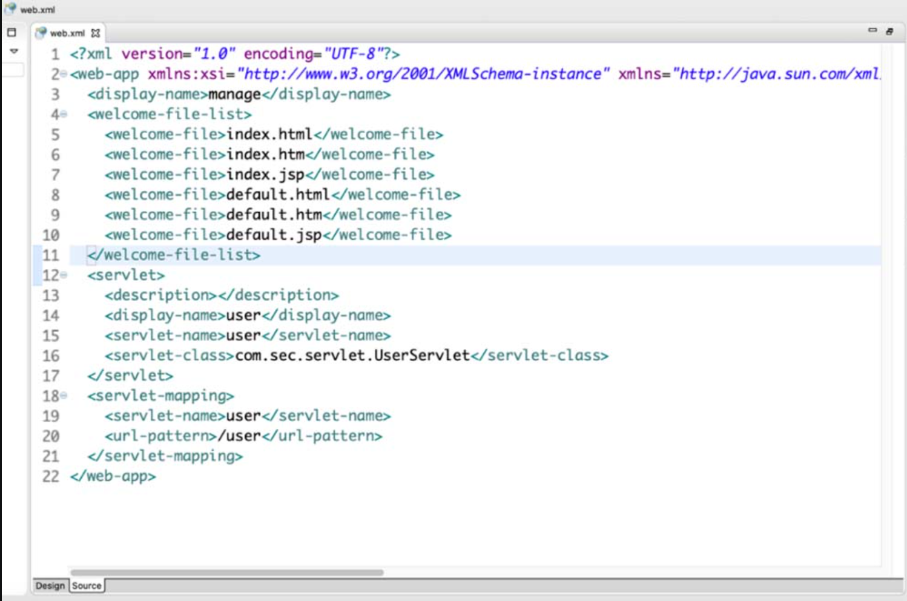
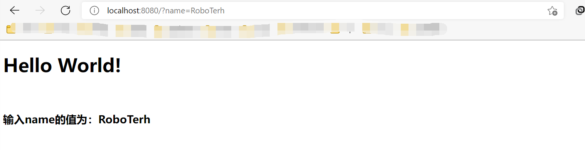

文章参考自《Java代码审计(入门篇)》书籍
Java基础
Java EE核心技术
- JDBC(Java Database Connectivity)：Java数据库连接
- JNDI(Java Naming and Directory Interface)：Java命令和目录接口
- EJB(Java Naming and Directory Interface)：Java Naming and Directory Interface
- RMI(Remote Method Invocation)：远程方法调用
- Servlet（Server Applet）：其主要功能在于交互式地浏览和修改数据，生成动态 Web 内容
- JSP（JavaServer Pages）是由Sun公司主导并创建的一种动态网页技术标准
- 可扩展标记语言（eXtensible Markup Language，XML）
- JMS（Java Message Service）：Java消息服务
Servlet
- Servlet 3.0 之前的版本是在
web.xml中配置 - 之后的版本是使用便捷的注解方式配置
web.xml
配置如图：

基于注解的方式
在Servlet 3.0以上的版本中，可以使用注解的方式配置（@WebServlet注解）：
参数解释：

访问流程
接口方法
init()接口：在Servlet实例化后，Servlet容器会调用init()方法来初始化该对象，主要是使Servlet 对象在处理客户请求前可以完成一些初始化工作
//定义方法
public void init() throws ServletException{
xxxx
}service()接口：service()方法来处理来自客户端（浏览器）的请求，并将格式化的响应写回给客户端
//定义方法
public void service(ServletRequest request, ServletResponse response) throws ServletException, IOException{
xxxx
}doGet()/doPost()接口：doGet() 等方法根据HTTP的不同请求调用不同的方法
//deGet的定义
public void doGet(HttpServletRequest request, HttpServletResponse response) throw ServletException, IOException{
xxxx
}destory()接口：调用该对象的destroy() 方法，以便Servlet对象释放它所使用的资源
//定义方法
public void destory(){
xxxx
}getServletConfig()接口：返回Servlet容器调用init() 方法时传递给Servlet对象的ServletConfig对象getServletInfo()接口：返回一个 String 类型的字符串，包括关于 Servlet 的信息，如作者、版本及版权等
Servlet处理全过程：
反射类
反射类的基本使用
获取类对象
- Class类中的
forName()方法：需要传入类名
public class GetClassName {
public static void main(String[] args) throws ClassNotFoundException{
Class name = Class.forName("java.lang.Runtime");
System.out.println(name);
}
}- 直接获取：数据类型都具有静态的特征，可以使用
.class直接获取对应的Class对象
public class GetClassName {
public static void main(String[] args) throws ClassNotFoundException{
Class<?> name = Runtime.class;
System.out.println(name);
}
}- 使用
Object类中的getClass()方法获取对象：需要明确具体的类，之后创建一个对象
public class GetClassName {
public static void main(String[] args) throws ClassNotFoundException{
Runtime rt = Runtime.getRuntime();
Class<?> name = rt.getClass();
System.out.println(name);
}
}- 使用
getSystemClassLoader().loadClass()方法来获取对象
public class GetClassName {
public static void main(String[] args) throws ClassNotFoundException{
Class<?> name = ClassLoader.getSystemClassLoader().loadClass("java.lang.Runtime");
System.out.println(name);
}
}获取类方法
getDeclaredMethods()方法：返回除了继承的所有方法
import java.lang.reflect.Method;
public class GetClassName {
public static void main(String[] args) throws ClassNotFoundException{
Class<?> name = Class.forName("java.lang.Runtime");
Method[] declaredMethods = name.getDeclaredMethods();
System.out.println("我们从getDeclaredMethods函数获取到了方法：");
for(Method m:declaredMethods){
System.out.println(m);
}
}
}getMethods()方法：返回一个类的所有public方法，包括继承类
import java.lang.reflect.Method;
public class GetClassName {
public static void main(String[] args) throws ClassNotFoundException{
Class<?> name = Class.forName("java.lang.Runtime");
Method[] declaredMethods = name.getMethods();
System.out.println("我们从getMethods函数获取到了方法：");
for(Method m:declaredMethods){
System.out.println(m);
}
}
}getMethod()方法：第一个参数为返回的方法名称，后面的参数为对应的class对象
import java.lang.reflect.Method;
public class GetClassName {
public static void main(String[] args) throws NoSuchMethodException,ClassNotFoundException{
Class<?> name = Class.forName("java.lang.Runtime");
Method declaredMethods = name.getMethod("exec", String.class);
System.out.println("我们从getMethod函数获取到了方法：");
System.out.println(declaredMethods);
}
}getDeclaredMethod()方法：和getMothod()类似
import java.lang.reflect.Method;
public class GetClassName {
public static void main(String[] args) throws NoSuchMethodException,ClassNotFoundException{
Class<?> name = Class.forName("java.lang.Runtime");
Method declaredMethods = name.getDeclaredMethod("exec", String.class);
System.out.println("我们从getMethod函数获取到了方法：");
System.out.println(declaredMethods);
}
}获取成员变量
getDeclaredFields()方法：能够获得成员变量数组
import java.lang.reflect.Method;
import java.lang.reflect.Field;
public class GetVar {
public static void main(String[] args) throws ClassNotFoundException{
student stu = new student();
Class<?> name = stu.getClass();
Field[] getDeclaredFields = name.getDeclaredFields();
System.out.println("使用 getDeclaredFields 获取变量：");
for(Field m:getDeclaredFields){
System.out.println(m);
}
}
}getFields()方法能够获得一个类的所有public字段，包括父类中的
import java.lang.reflect.Method;
import java.lang.reflect.Field;
public class GetVar {
public static void main(String[] args) throws ClassNotFoundException{
student stu = new student();
Class<?> name = stu.getClass();
Field[] getFields = name.getFields();
System.out.println("使用 getFields 获取变量：");
for(Field m:getFields){
System.out.println(m);
}
}
}getDeclaredField()方法：只能获取单个变量
import java.lang.reflect.Method;
import java.lang.reflect.Field;
public class GetVar {
public static void main(String[] args) throws NoSuchFieldException,ClassNotFoundException{
student stu = new student();
Class<?> name = stu.getClass();
Field getDeclaredFields = name.getDeclaredField("address");
System.out.println("使用 getFields 获取变量：");
System.out.println(getDeclaredFields);
}
}getField()方法：同样是单个变量，可以是父类的变量
代理
动态代理
Proxy类
在JDK中，java提供了
java.lang.reflect.InvocationHandler接口和java.lang.reflect.Proxy类，Proxy类创建一个代理对象的类
static InvocationHandlergetInvocationHandler(Object proxy): 获取指定代理对象所关联的调用程序static Class<?>getProxyClass(ClassLoader loader, Class<?>... interfaces): 给出类加载器和接口数组的代理类的java.lang.Class对象static booleanisProxyClass(Class<?> cl): 当且仅当指定的类通过getProxyClass或者getProxyInstance方法动态生成代理类的时候返回为truestatic ObjectnewProxyInstance(ClassLoader loader, Class<?>[] interfaces, InvocationHandler h): 返回指定接口的代理类的实例，该接口将方法调用分派给指定的调用处理程序。
SQL注入
SQL注入(SQL Injection)因为程序未能正确对用户的输入进行检查过滤，将用户输入和SQL语句进行拼接导致了SQL注入的产生
JDBC拼接不当造成SQL注入
对象：
connection: 对象代表数据库，事务提交(connection.commit())，事务回滚(connection.rollback)statement: 调用connection.createStatement()方法产生的对象。执行SQL语句PreparedStatement: 使用了?作为占位符，在预编译的阶段填入相应的值构造出完整的SQL语句
package com.demo;
import javax.servlet.annotation.WebServlet;
import javax.servlet.http.HttpServlet;
import javax.servlet.http.HttpServletRequest;
import javax.servlet.http.HttpServletResponse;
import java.sql.*;
@WebServlet
public class SQLDemo4 extends HttpServlet {
@Override
protected void doGet(HttpServletRequest req, HttpServletResponse resp){
String url = "jdbc:mysql://localhost:3306/javaweb";
String username = "root";
String password = "root";
String id = req.getParameter("id");
Connection conn = null;
try {
Class.forName("com.mysql.jdbc.Driver");
conn = DriverManager.getConnection(url, username, password);
String sql = "select * from users where id = '"+id+"'";
Statement statement = conn.createStatement();
ResultSet resultSet = statement.executeQuery(sql);
} catch (SQLException e) {
e.printStackTrace();
} catch (ClassNotFoundException e) {
e.printStackTrace();
}
}
@Override
protected void doPost(HttpServletRequest req, HttpServletResponse resp){
this.doGet(req, resp);
}
}这里使用的是statement的对象来执行SQL语句，将前端GET/POST传入的id直接拼接进了SQL语句中，造成了SQL注入漏洞
使用预编译的方式可以减少危害
PrepareStatement方法可以使用?对变量就行占位，在编译阶段构造出完整的值，就可以避免SQL注入的产生
如果使用了拼接的方式构造SQL语句，这种时候预编译就不能够阻止SQL注入的产生
String sql = "select * from user where id = " + req.getParameter("id");
out.prinln(sql);
try{
PreparedStatement ps = con.Preparestatement(sql);
ResultSet rs = ps.executeQuery();
while(rs.next()){
............
}
} catch(SQLException e){
e.printStackTrace();
}正确使用?进行占位可以消除
String sql = "select * from user where id = ?";
out.println(sql);
try{
PreparedStatement ps = conn.prepareStatement(sql);
ps.setInt(1, Integer.parseInt(req.getParameter("id")));
ResultSet rs = ps.executeQuery();
............
}..............框架使用不当
对JDBC进行更抽象化的持续化框架，
MyBatis和Hibernate框架
MyBaties框架
获取前端传入的值的方式：
#{} 相当于占位符问号，使用了预编译
${} 直接获取值
预编译的解释：
preparedStatement严格来说并不是真正等同于预编译，预编译分为客户端的预编译和服务端的预编译，JDBC驱动程序5.0.5以后的版本默认预编译关闭，在配置连接数据库的时候url参数来进行开启useServerPrepStmts=true&cachePrepStmts=ture
使用
#{}方式构造sql<select id="QueryByName" parameterType="String" resultType="com.demo.bean.User"> select * from user where name = ${name} </select>采用了预编译的方式
使用
${}方式构造sql存在sql注入
Hibermate框架
HQL查询语句由
Hibermate引擎进行解析，产生错误的信息可能来自于数据库，或者也有可以是该引擎
使用HQL参数绑定的方式避免注入的产生
- 位置参数
Query<User> query = session.createQuery("from com.....Userwhere name = ?1", User.class);
query.serParameter(1, parameter);- 命名参数
Query<User> query = session.createQuery("from com.....Userwhere name = :name", User.class);
query.setParameter("name", parameter);- 命名参数列表
Query<User> query = session.createQuery("from com....User where name in (:names)", User.class);
query.setParameter("names", names);- 类实例
Query<User> query = session.createQuery("from com....User where name name = :name", User.class);
query.setProperties(user1);这些都采用了预编译的方式可以防止SQL注入
采用拼接构造就会产生SQL注入
Query<User> query = session.createNativeQuery("select * from User where name = '" + parameter + "'");命令注入
Java中的Runtime类可以提供调用系统命令的功能
import javax.servlet.ServletException;
import javax.servlet.annotation.WebServlet;
import javax.servlet.http.HttpServlet;
import javax.servlet.http.HttpServletRequest;
import javax.servlet.http.HttpServletResponse;
import java.io.ByteArrayOutputStream;
import java.io.IOException;
import java.io.InputStream;
import java.io.PrintWriter;
@WebServlet("/command")
public class CommandInjectionDemo1 extends HttpServlet {
@Override
protected void doGet(HttpServletRequest req, HttpServletResponse resp) throws ServletException, IOException {
String cmd = req.getParameter("cmd");
//执行cmd命令
Process exec = Runtime.getRuntime().exec(cmd);
//输入流
InputStream is = exec.getInputStream();
//输出流
ByteArrayOutputStream baos = new ByteArrayOutputStream();
//字节
byte[] b = new byte[1024];
int i = -1;
while((i = is.read(b)) != -1){
baos.write(b, 0, i);
}
PrintWriter pw = resp.getWriter();
pw.print(new String(baos.toByteArray()));
}
@Override
protected void doPost(HttpServletRequest req, HttpServletResponse resp) throws ServletException, IOException {
this.doGet(req, resp);
}
}上面的代码，因为cmd参数可控，用户可以在服务器上执行任意系统命令
命令注入的局限
常用的连接符有
|||&&&
在window的cmd中使用ping xxxx&ipconfig是执行了两条命令
linux中同样适用
但是在Java环境中，会将其认为是一个完整的字符串而不是两条命令
则：
Process exec = Runtime.getRuntime().exec("ping " + url);这个代码就不存在命令注入
局限的原因
查看exec方法的源代码
public Process exec(String command) throws IOException {
return exec(command, null, null);
}
public Process exec(String command, String[] envp) throws IOException {
return exec(command, envp, null);
}
public Process exec(String command, String[] envp, File dir)
throws IOException {
if (command.length() == 0)
throw new IllegalArgumentException("Empty command");
StringTokenizer st = new StringTokenizer(command);
String[] cmdarray = new String[st.countTokens()];
for (int i = 0; st.hasMoreTokens(); i++)
cmdarray[i] = st.nextToken();
return exec(cmdarray, envp, dir);
}
public Process exec(String cmdarray[]) throws IOException {
return exec(cmdarray, null, null);
}
public Process exec(String[] cmdarray, String[] envp) throws IOException {
return exec(cmdarray, envp, null);
}
public Process exec(String[] cmdarray, String[] envp, File dir)
throws IOException {
return new ProcessBuilder(cmdarray)
.environment(envp)
.directory(dir)
.start();
}
可以发现传入执行命令可以传入字符串或者数组
表达式注入
EL表达式基础
表达式语言(Expression Language)，又称EL表达式
是一种在JSP中内置的语言，可以作用于用户访问页面的上下文以及不同作用域的对象，取得对象属性值或者执行简单的运算和判断操作
功能：
- 获取数据：从JSP的四大作用域(page, request, session, application)中获取数据
- 执行运算：
- 获取Web开发常用对象：表达式内置了11个隐式对象，可以通过这些对象获取想要的数据
- 调用JAVA方法：允许用户自定义开发EL函数， 得以在JSP页面通过EL表达式调用JAVA类的方法
四大作用域：
page: 只在一个页面保存数据【Javax.servlet.jsp.PageContext (抽象类)】request: 只在一个请求中保存数据【Javax.servlet.httpServletRequest】session: 在一次会话中保存数据，仅供单个用户使用【Javax.servlet.http.HttpSession】application: 在整个服务器中保存数据，全部用户共享【Javax.servlet.ServletContext】
隐式对象：
pageScope: page作用域requestScope: request作用域sessionScope: session作用域applicationScope: application作用域param: request对象的参数，为字符串形式paramValues: Request对象的参数，为字符串集合header: HTTP信息头，为字符串形式headerValues: HTTP信息头，为字符串集合形式initParam: 上下文初始化参数cookie：Cookie值pageContext: 当前页面的pageContext
语法
在JSP中使用${}表示该处为EL表达式
${name}: 表示获取变量名为name的变量值- 默认在
page作用域范围查找，没找到之后依次在requestsessionapplication作用域查找 - 也可以使用作用域为前缀查找
${requestScope.name}为查找在request作用域的name变量
获取对象属性
${Object.attribute}: eg: ${param.name}为获取param对象的name属性- ${param “name”}
- ${param[name]}
实例
<%@ page contentType="text/html; charset=UTF-8" pageEncoding="UTF-8" %>
<!DOCTYPE html>
<html>
<head>
<title>JSP - Hello World</title>
</head>
<body>
<h1><%= "Hello World!" %></h1>
<br/>
<%--<a href="hello-servlet">Hello Servlet</a>--%>
<h3>输入name的值为：${param.name}</h3>
</body>
</html>
可以发现提取了传入的参数
同样可以实例化Java内置类（Runtime.getRuntime.exec()可以执行系统命令）
<%@ page contentType="text/html; charset=UTF-8" pageEncoding="UTF-8" %>
<!DOCTYPE html>
<html>
<head>
<title>JSP - Hello World</title>
</head>
<body>
<h1><%= "Hello World!" %></h1>
<br/>
<%--<a href="hello-servlet">Hello Servlet</a>--%>
<%--<h3>输入name的值为：${param.name}</h3>--%>
${Runtime.getRuntime().exec("calc")}
</body>
</html>


- Post link: https://roboterh.github.io/2021/12/30/Java%E4%BB%A3%E7%A0%81%E5%AE%A1%E8%AE%A1-%E4%B8%80/
- Copyright Notice: All articles in this blog are licensed under unless otherwise stated.